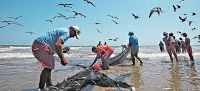
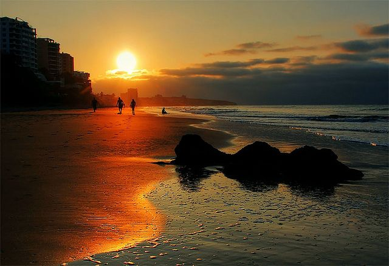
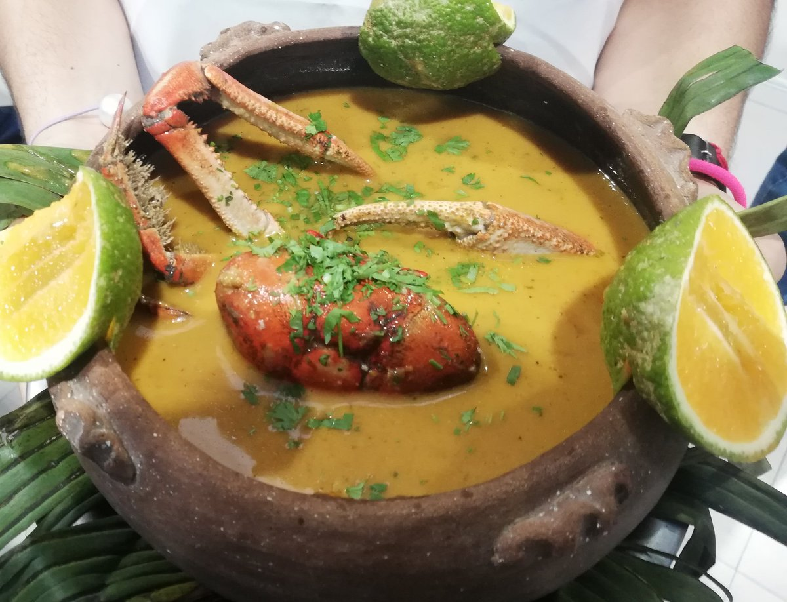
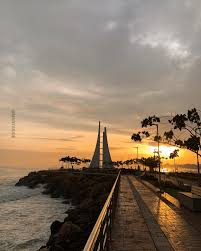

About Manta
Manta is one of Ecuador´s importants coustal cities known fro its beaches, fishis, industry, toursim, and economic growth bisides Manta is the tuna capital of the world
Local culture
Manta's culture is a lively blend of its rich Manteño roots, Montubio customs, and a strong connection to the sea. It's particularly known for its seafood expertise, the fishing industry, the use of Spondylus shells, and cultural treasures like amorfinos (traditional folk songs) and fish weirs. The key elements that shape the local identity include: Ancestral Legacy: Manta is built on the historic site of "Jocay" (House of the Fish). The Manteño culture (500-1534 AD) is highlighted by its famous U-shaped stone chairs. Seafood Gastronomy: The local cuisine is all about the ocean. Must-try dishes feature encebollado (a hearty fish stew), Manabí-style ceviche (with peanuts), tongas (delicious plantain dumplings), and hayacas (savory corn tamales). Montubio and Oral Tradition: Manta honors its oral heritage through amorfino—recognized as Intangible Cultural Heritage—and the craftsmanship of toquilla straw hats. Historical and Archaeological Sites: You can dive into the past by visiting places like the Manta Cultural Center Museum, the Cerro de Hojas-Jaboncillo archaeological site, and the ancestral Ligüiqui Marine Corrals.
Fun Facts
- History: These were built on the remnants of the ancient pre-Columbian city of Jocay, which translates to "house of fish." It officially became a canton on November 4, 1922.
- World Capital of Tuna: This place stands out as the country's key hub for both industry and fishing, playing a vital role in processing and exporting tuna to markets around the globe.
- Wheather: The climate here is shaped by the chilly Humboldt current, resulting in a dry atmosphere with comfortable temperatures throughout most of the year and very little rainfall.
- Gastronomy: Renowned for its signature Manabí dishes, this region shines with delights like fish ceviche, viche, tonga, and the beloved traditional corviche.
Featured Attractions
Gallery



